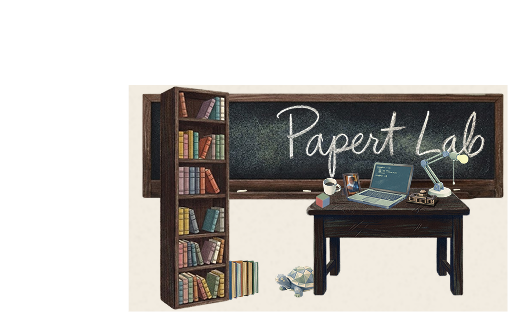

Requirement Engineering via Software Testing in CS1
Using high-level blackbox testing as a pedagogical vehicle to teach requirement specification. Students learn to discover and articulate system requirements through test-case construction.

Papert Lab is a research collective studying how humans learn to think with computers. We build tools, run experiments, and write about the cognitive machinery of programming, problem-solving, and self-directed learning.
Using high-level blackbox testing as a pedagogical vehicle to teach requirement specification. Students learn to discover and articulate system requirements through test-case construction.
Investigating how the structure and selection of context supplied to language models affects the quality of scientific reasoning, analogous to how requirements shape software outcomes.
Exploring whether LLMs that simulate help-seeking behaviors can teach students to write better test cases by forcing them to specify requirements for an underspecified system.
Named for Seymour Papert, who believed that the best way to learn is to build things that matter. We operate at the intersection of human-computer interaction, learning science, and artificial intelligence — asking what changes when students have powerful tools and the agency to direct their own learning.
Our work draws on cognitive science, software engineering pedagogy, and the constructionist tradition. We care less about whether students can pass a test and more about whether they can specify what a system should do, reason about why it fails, and iteratively refine their mental models until the gap between intention and artifact closes.